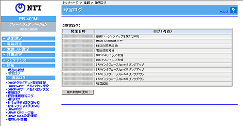

| 本商品で発生したイベントのログが表示されます。 | |
|
|
| ※「Web設定」画面に表示されているボタンについての説明は こちら | |
|  |
| ［障害ログ］ | ||
| 本商品で発生したイベントのログが表示されます。 ログは最新のものから順に最大100件表示されます。 時刻情報が取得できない場合には、本商品起動時点を0時とする相対時刻が表示されます。 時刻情報が取得できた場合には、絶対時刻が表示されます。 |
||
| 障害ログの発生日時を表示します。 | |
| 障害ログの内容を表示します。 | |
| ログメッセージ | 内容 |
| 機器起動 | 電源ONにより起動。 |
| 機器再起動 | 再起動により起動。 |
| LANインタフェースリンクアップ | LANインタフェースがリンクアップ。 |
| LANインタフェースリンクダウン | LANインタフェースがリンクダウン。 |
| WANインタフェースリンクアップ | WANインタフェースがリンクアップ。 |
| WANインタフェースリンクダウン | WANインタフェースがリンクダウン。 |
| ひかり電話機能初期化成功 | ひかり電話機能初期化を行い、再起動により初期化が成功。 |
| ひかり電話機能初期化失敗 | ひかり電話機能初期化を行うが、ファームウェア更新や緊急呼通話中のため初期化が失敗。 |
| ひかり電話以外の機能初期化成功 | ひかり電話以外の機能初期化を行い、再起動により初期化が成功。 |
| ひかり電話以外の機能初期化失敗 | ひかり電話以外の機能初期化を行うが、ファームウェア更新や緊急呼通話中のため初期化が失敗。 |
| 時刻の同期成功 | 時刻同期に成功したとき。 |
| 時刻の同期失敗 | 時刻同期に失敗したとき。 |
| PPP-LCPの確立 | PPP-LCPの確立成功。 |
| PPPの認証成功 | PPP-LCPの認証成功。 |
| PPPの認証失敗 | PPP-LCPの認証起因による確立失敗。 |
| PPP-IPCPの確立 | PPP-IPCPの確立成功。 |
| PPPoEセッション開始成功 | PPPoEセッション開始成功。 |
| 電話使用可能 | ひかり電話および内線電話の発着信が可能。 |
| 電話使用不可 | ひかり電話および内線電話の発着信が不可。 ネットワーク未接続、ひかり電話サーバとの接続でエラーが発生など。 |
| 電話サーバ接続失敗（再試行中） | ひかり電話サーバとの接続に失敗。 |
| DHCPv4アドレス取得 | WANポートにIPv4アドレスをDHCPサーバから取得したとき。 |
| DHCPv4リース時間満了 | WANポートで取得したIPv4アドレスの有効期限が切れたとき。 |
| DHCPv6アドレス取得 | WANポートにIPv6アドレスをDHCPサーバから取得したとき。 |
| DHCPv6リース時間満了 | WANポートで取得したIPv6アドレスの有効期限が切れたとき。 |
| 内線端末設定エラー 割り当て可能なエントリなし |
内線端末エントリ数がエントリ可能数を超えている場合。 |
| 設定情報を保存 | 設定情報の保存が成功。 |
| 自動バージョンアップエラー 通信エラー |
VerUPサーバへ接続ができない。 |
| ファームウェアダウンロード完了 | 正常にファームウェアのダウンロード処理が完了。 |
| ファームウェア更新完了 | 正常にファームウェアの更新処理が完了。 |
| 無線LAN簡単セットアップ失敗 無線LANカードなし |
無線LAN簡単セットアップ起動時に無線LANカードが装着されていない場合。 |
| 無線LAN簡単セットアップ失敗 無線LAN未使用 |
無線LAN簡単セットアップ起動時に無線LAN機能「使用する」のチェックがない場合。 |
| 無線LAN簡単セットアップ失敗 MACアドレスフィルタリング 空きエントリなし |
無線LAN簡単セットアップ起動時にMACアドレスフィルタリングエントリーテーブルに空きがない場合。 |
| 無線LAN簡単セットアップ らくらく無線スタート失敗暗号化なし |
無線LAN簡単セットアップ起動時に暗号化なし設定となっていた場合。 |
| 無線LAN簡単セットアップ 無線LAN簡単接続機能（PBC）成功 |
無線LAN簡単セットアップ無線LAN簡単接続機能（PBC）(おまかせモード時も含む)に成功した場合。 |
| 無線LAN簡単セットアップ 無線LAN簡単接続機能（PIN）成功 |
無線LAN簡単セットアップ無線LAN簡単接続機能（PIN）に成功した場合。 |
| 無線LAN簡単セットアップ 無線LAN簡単接続機能（PIN）失敗 PINコード不一致 |
無線LAN簡単セットアップ無線LAN簡単接続機能（PIN）がPINコード不一致で失敗した場合。 |
| 無線LAN簡単セットアップ 無線LAN簡単接続機能（外部レジストラ）成功 |
無線LAN簡単セットアップ無線LAN簡単接続機能（外部レジストラ）成功した場合。 |
| 無線LAN簡単セットアップ 無線LAN簡単接続機能（外部レジストラ）失敗PINコード不一致 |
無線LAN簡単セットアップ無線LAN簡単接続機能（外部レジストラ）がPINコード不一致で失敗した場合。 |
| 無線LAN簡単セットアップ らくらく無線スタート成功 |
無線LAN簡単セットアップらくらく無線スタート成功した場合。 |
| 無線LAN簡単セットアップ らくらく無線スタート失敗中止 |
無線LAN簡単セットアップらくらく無線スタートに失敗した場合。 |